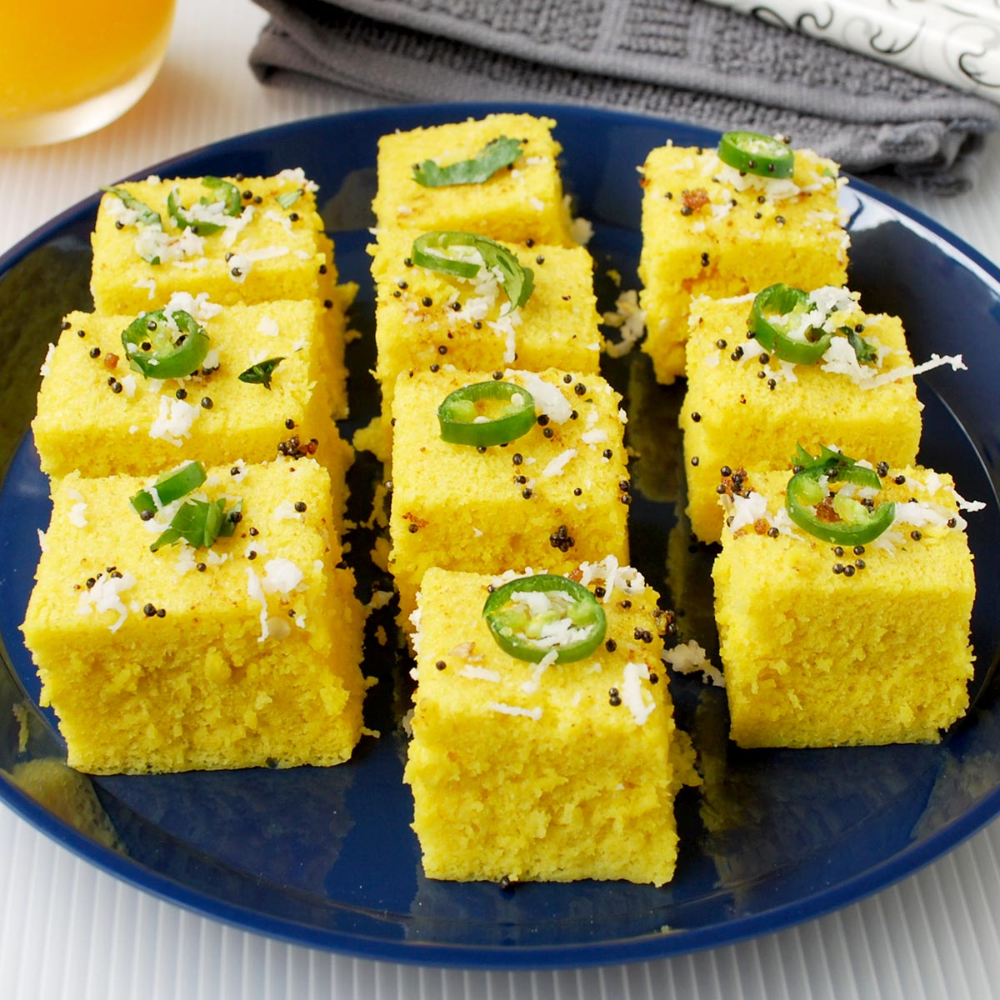

khaman
Spongy Delicacy of Gujrati

Khaman is a popular Gujarati snack that is soft, spongy, and full of flavor. It is made from gram flour (besan) and a combination of spices, and it is usually served with chutney or a sweet and tangy tamarind sauce.
To make khaman, you will need the following ingredients:
- 2 cups gram flour (besan)
- 1/2 cup yogurt
- 1 tablespoon semolina (sooji)
- 1 tablespoon ginger-green chili paste
- 1 teaspoon sugar
- 1 teaspoon lemon juice
- 1 teaspoon fruit salt (eno)
- 1/2 teaspoon turmeric powder
- 1/2 teaspoon mustard seeds
- 1/2 teaspoon cumin seeds
- A pinch of asafoetida (hing)
- A handful of chopped coriander leaves
- Salt to taste
- Water (as needed)
- Oil for greasing and tempering
Instructions:
- In a large mixing bowl, combine gram flour, yogurt, semolina, ginger-green chili paste, sugar, lemon juice, turmeric powder, and salt. Mix well to form a smooth batter.
- Add water gradually to adjust the consistency of the batter. It should be thick yet pourable.
- Grease a steamer plate or a baking dish with oil. Pour the batter into the greased plate or dish.
- In a steamer or a large pot, steam the batter for about 15-20 minutes until it is cooked and a toothpick inserted comes out clean.
- Remove the steamed khaman from the steamer and let it cool for a few minutes.
- Prepare the tempering by heating oil in a small pan. Add mustard seeds, cumin seeds, and asafoetida. Let them splutter.
- Pour the tempering over the steamed khaman and spread it evenly.
- Garnish with chopped coriander leaves.
- Cut the khaman into square or diamond-shaped pieces and serve with chutney or tamarind sauce.
Khaman is a popular snack in Gujarat and is enjoyed by people of all ages. Its light and fluffy texture, combined with the tangy and savory flavors, make it a perfect tea-time treat or an appetizer for parties and gatherings.